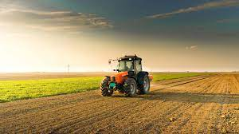

O agronegócio refere-se ao conjunto de atividades econômicas relacionadas à produção, processamento e distribuição de produtos agrícolas. Ele abrange todas as etapas da cadeia produtiva, desde o cultivo no campo até a chegada dos produtos aos consumidores finais.
O agronegócio não se limita apenas à agricultura, mas também inclui outras atividades relacionadas, como a criação de animais, a pesca, a silvicultura (cultivo de árvores para diversos fins), a produção de insumos agrícolas, o processamento de alimentos, a distribuição e a comercialização.
Esta cadeia produtiva envolve diversos agentes, como produtores rurais, empresas agrícolas, indústrias de processamento, distribuidores, varejistas e consumidores. O agronegócio desempenha um papel fundamental na economia global, fornecendo alimentos, fibras, energia renovável, matérias-primas industriais e outros produtos essenciais.
Além disso, o agronegócio está sujeito a diversas variáveis, como condições climáticas, tecnologias agrícolas, políticas governamentais, demanda do mercado e questões ambientais. Por ser uma área estratégica para o abastecimento alimentar e o desenvolvimento econômico, o agronegócio recebe atenção significativa em níveis local, nacional e internacional. 